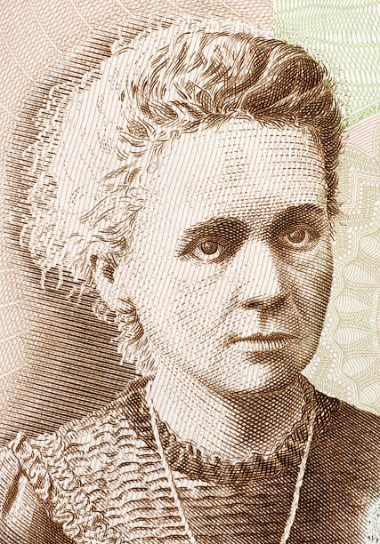
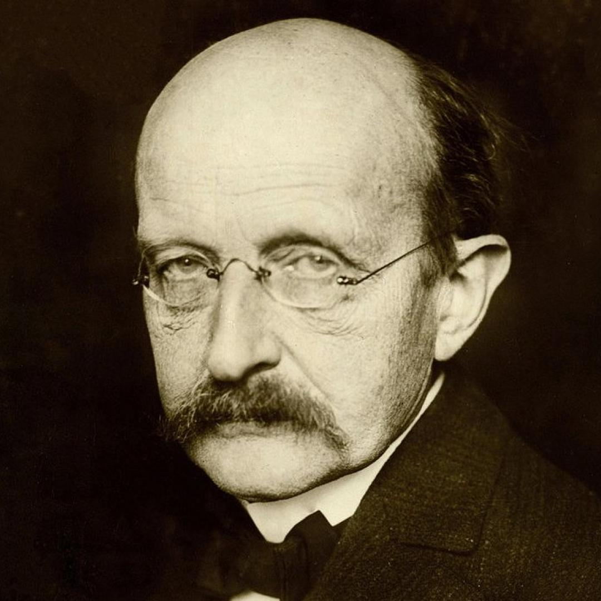

María Curie
Maria Salomea Skłodowska-Curie, conocida como Marie Curie, nació el 7 de noviembre de 1867 en Varsovia, Polonia. Fue una física, matemática y química pionera en el campo de la radiactividad. Marie no solamente fue la primera mujer, sino que la primera persona en recibir dos Premios Nobel en distintas especialidades: Física (1903) y Química (1911), y la primera mujer en hacer clases en la Universidad de París.
Albert Einstein
Se conoce a Albert Einstein como uno de los grandes genios de la humanidad. El físico alemán, quien realizó grandes contribuciones a la comprensión del universo, nació un 14 de marzo de 1879 en el seno de una familia judía. Con los años emigró a Italia, Suiza y posteriormente a Estados Unidos. La contribución de Einstein a principios del siglo XX es de enorme envergadura para determinar las leyes de la naturaleza en los campos de la física moderna, relatividad, física cuántica y cosmología.
Max Planck
En 1900, Planck descubrió la constante fundamental que lleva su nombre, que es utilizada para calcular la energía de un fotón. El físico descubrió que la radiación no es emitida ni absorbida en forma continua, sino en pequeñas cantidades a las que denominó cuantos.
Isaac Newton
Isaac Newton fue un físico y matemático inglés de los siglos XVII y XVIII (nació el 4 de enero de 1643 y murió el 31 de marzo de 1727 a los 84 años) conocido principalmente por: – Establecer las bases de la mecánica clásica a través de sus tres leyes del movimiento y su ley de la gravitación universal.